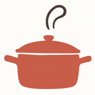

Ponla en tu móvil
En el iPhone se hace en tres toques, desde Safari:
1
Toca el botón Compartir, abajo en el centro.
2
Baja un poco y toca Añadir a pantalla de inicio.
3
Toca Añadir, arriba a la derecha. Ya tienes el icono con tus apps.

Abre el menú del navegador (⋮ o ⋯) y busca Instalar app o Añadir a pantalla de inicio.